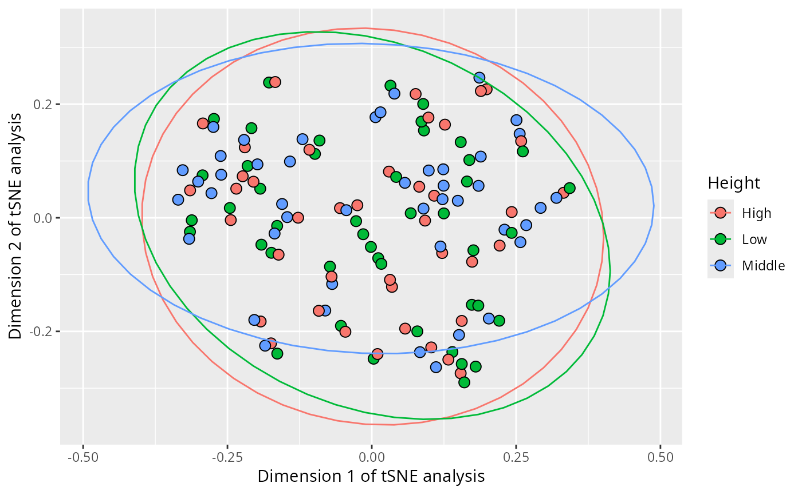
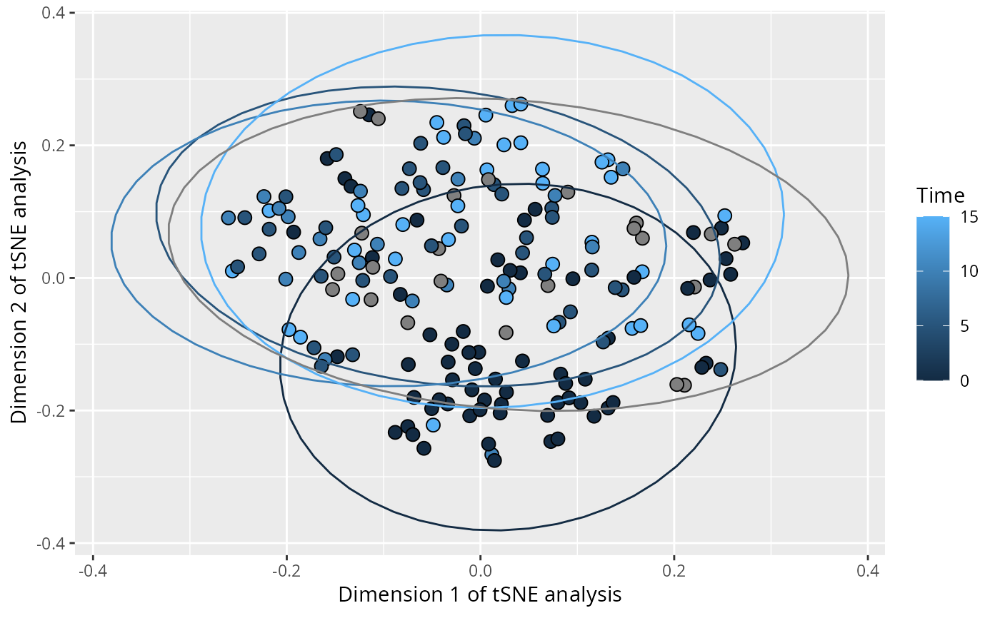

Plot a tsne low dimensional representation of a phyloseq object
Source:R/plot_functions.R
plot_tsne_pq.Rd
Partially inspired by phylosmith::tsne_phyloseq() function developed by Schuyler D. Smith.
Usage
plot_tsne_pq(
physeq,
method = "bray",
dims = 2,
theta = 0,
perplexity = 30,
fact = NA,
ellipse_level = 0.95,
plot_dims = c(1, 2),
na_remove = TRUE,
force_factor = TRUE,
...
)Arguments
- physeq
(required): a
phyloseq-classobject obtained using thephyloseqpackage.- method
A method to calculate distance using
vegan::vegdist()function (default: "bray")- dims
(Int) Output dimensionality (default: 2)
- theta
(Numeric) Speed/accuracy trade-off (increase for less accuracy), set to 0.0 for exact TSNE (default: 0.0 see details in the man page of
Rtsne::Rtsne).- perplexity
(Numeric) Perplexity parameter (should not be bigger than 3 * perplexity < nrow(X) - 1, see details in the man page of
Rtsne::Rtsne)- fact
Name of the column in
physeq@sam_dataused to color points and compute ellipses.- ellipse_level
The level used in stat_ellipse. Set to NULL to discard ellipse (default = 0.95)
- plot_dims
A vector of 2 values defining the rank of dimension to plot (default: c(1,2))
- na_remove
(logical, default TRUE) Does the samples with NA values in fact are removed? (default: true)
- force_factor
(logical, default TRUE) Force the fact column to be a factor.
- ...
Other arguments passed on to
Rtsne::Rtsne()
Examples
data(data_fungi)
if (requireNamespace("Rtsne")) {
plot_tsne_pq(data_fungi, fact = "Height", perplexity = 15)
}
#> Loading required namespace: Rtsne
#> Taxa are now in rows.

# \donttest{
if (requireNamespace("Rtsne")) {
plot_tsne_pq(data_fungi, fact = "Time") + geom_label(aes(label = Sample_id, fill = Time))
plot_tsne_pq(data_fungi, fact = "Time", na_remove = FALSE, force_factor = FALSE)
}
#> Taxa are now in rows.
#> Taxa are now in rows.

# }